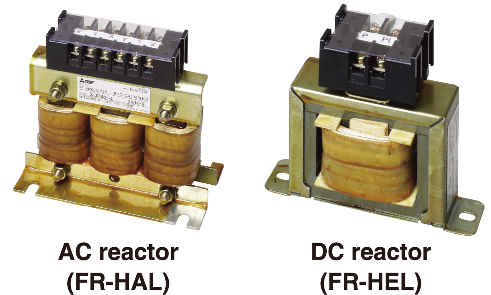

Inverters-FREQROL-F Series -FREQROL-F800- Compatibility with the Environment

Suppression of Outgoing Harmonic Current and EMI
- Harmonic current may adversely affect the power supply. To suppress such harmonic current, the power-factor-improving compact AC reactor (FR-HAL) and the DC reactor (FR-HEL) are available. (For the 75K or higher inverter, always connect a DC reactor. Select a DC reactor according to the applied motor capacity.)

- By attaching the EMC filter connector to the ON or OFF position, the built-in EMC filter can be set enabled/disabled*1*2. When it is enabled, the inverter conforms to the EMC Directive (EN61800-3/2nd Environment Category C3*3) by itself.
- *1Enabling the EMC filter increases leakage current.
- *2The input side common mode choke, which is built in the 55K or lower inverter, is always enabled regardless of the EMC filter ON/OFF connector setting.
- *3Refer to the EMC Installation Guidelines for the required specifications.
| Capacitive filter | Common mode choke | DC reactor | |
|---|---|---|---|
| 55K or lower | Standard (built-in) | Standard (built-in) | Option (sold separately) |
| 75K or higher | Standard (built-in) | Option (sold separately) | Option (sold separately) |
- The F800 series 55 kW or lower inverter is equipped with built-in capacitive filters (capacitors) and common mode chokes. By installing the optional DC reactor (FR-HEL), the inverter can confirm with Architectural Standard Specifications (Electrical Installation) and the Architectural Standard Specifications (Machinery Installation) supervised by the Ministry of Land, Infrastructure, Transport and Tourism of Japan. (For the F800 series 75 kW or higher inverter, prepare common mode chokes (line noise filters) and a DC reactor.)
- With a high power factor converter (FR-HC2), the inverter is equivalent to a self-excitation three-phase bridge circuit in the "Harmonic Suppression Guidelines for Specific Consumers" in Japan, and realizes the equivalent capacity conversion coefficient K5=0. For the 355 kW or higher inverters, the converter is separated. Therefore, installation space can be saved when connecting the FR-HC2.
Protected in Hazardous Environments
Inverters with circuit board coating (IEC60721-3-3:1994 3C2/3S2) and plated conductors are available for improved environmental resistance. ("-60" or "-06" is affixed to the end of the inverter model name.)
Global Compatibility
- Complies with UL, cUL, and EC Directives (CE marking), and the Radio Waves Act (South Korea) (KC marking). It is also certified as compliant with the Eurasian Conformity (EAC).
- The inverters are compliant with the EU RoHS Directive (Restriction of the Use of Certain Hazardous Substances in Electrical and Electronic Equipment), friendly to people and to the environment.
For details of the models compliant with global standards,
contact your local sales office.